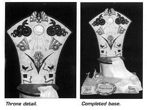
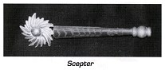

The 1/6 scale kit
of Monique Gabrielle as the Babylon Beauty is molded in white resin and
cast in 14 pieces: throne (2), cat (3), Monique (3), base (3) and scepter
(3).
The 1/6 scale kit
of Monique Gabrielle as the Babylon Beauty is molded in white resin and
cast in 14 pieces: throne (2), cat (3), Monique (3), base (3) and scepter
(3).
Monique had seam lines on the tops and bottoms of her legs and arms, left and right sides of her torso, and on the left side of her hair. These were easily removed with some light sanding. Her chin had a sink hole and this was filled with Squadron White Putty. I attached her left arm with Zap-a- Gap and Zip Kicker. I filled in the area above her arm jewelry with Squadron White Putty and then sanded it smooth. I drilled through her right hand so that she could hold her scepter. There was a small hole on her thumb, and I filled this with putty. I attached her right arm with Zap-a-gap and Zip Kicker. I sanded the buttoms of her feet to remove excess resin. I then sprayed the completed figure with white primer and set it aside to dry.
The Cat
There was a slight, mold line on the right front leg that had to
be sanded away. (Take care here because you don't want to sand away the
fur pattern on the cat's body.) To get a better fit, the tops of the cat's
legs must be sanded smooth. I attached the legs with Zap-a-Gap and Zip
Kicker. To attach the tail, I made a V notch in the cat's rear, then glued
it into place with Zap-a-Gap and Zip Kicker.
The Base
For a better fit, I sanded the area where the throne would meet
the base. Because the throne is large, I decided it would be a good idea
to give it some extra support. I drilled matching holes in the base and
throne and inserted wooden dowels before gluing the throne and base together.
I then put squadron White Putty around the base and skirt.
The Scepter
First, I drilled a hole into the wooden scepter piece to accept
the metal shaft, and then glued the shaft in place. I trimmed the end of
the crown to fit into the wooden piece and then glued it into place.
Painting
After making sure that all seams were sanded smooth and there were
no surface blemishes, I primed the completed Monique with white spray primer
from Citadelle Mliniatures. The advantage to this primer is that it goes
on smoothly and dries quickly. After the primer dried, I sprayed the body
with a medium flesh color. I spray painted the hair light yellow. When
this had dried I sprayed a lighter color of flesh over the medium flesh.
Where the skin had creases let the medium flesh show through to create
a contrast.
To paint the sandals, I first covered the legs and exposed feet with liquid latex. When this had dried, I sprayed the sandals with Humbrol "red leather". I used Testers "Metallizer brass" for the belt, chest plates, bracelets and arm bands. Taking care to first mask all the surrounding areas with liquid latex. I painted the scabbard belt buckle black.
After all this had dried, I painted Monique's face. Here I made use of Horizon's line of flesh colors (numbers 1 to 9).
I painted the lips using #6, the area under the eyebrows was #7, and the eyebrows were #9. I also used #7 for the bottom eyelashes.
After several days, I decided that I could enhance Monique by doing some detailing. Using a 10/000 brush, black paint, and an infinite amount of patience, I filled in the designs on the previously painted brass ornaments. I then outlined the ornaments with a thin line of black. This really makes them stand out and appear less molded on. After detailing the necklace with black, I used metallic paints from Citadelle Miniatures to paint the jewels green, red, blue and purple. To paint the chain attached to the necklace, I used brass, gold and silver to create highlights, and a touch of black to create shadows and contrast with the surrounding flesh areas.
Because the sandals looked plain with just one coat of Humbrol "red leather", I painted all the edges of the sandals with Humbrol "red leather" straight from the tin, which is darker than the sprayed color. I then went back and used brass and silver to create metal pieces on the sandals. I outlined these with a thin line of black to create contrast and make them appear less molded on.
I finished Monique by adding red highlights to her lips. I also added several different shades of yellow and light brown to her hair, creating more contrast. Using my 10/000 brush, I painted a thin line of dark flesh where her hair touched her skin to create more contrast.
The Cat
After the cat was assembled and primed, I sprayed it an overall
light yellow. Using the box photo as a guide, l lightly sprayed lines of
a mixture of yellow and brown over the cat's body. l next painted the cat's
eyes, nose, ears and toenails. I then painted the collar with Humbrol red
leather and used silver for the collar studs and buckle.
The Base and Throne
After priming
the base and throne, I painted it a mottled yellow brown to create some
contrast and a sense of age. I left the skirt and the cloth around the
floor piece white. I know it says "Babylon Beauty", but the throne
has an Egyptian motif. I was hard pressed to find the correct color schemes
for the throne. I went through all my reference books and several video
episodes of Rohmer's Egypt before I found out the right colors for the
symbols carved into the back of the throne. My predominant colors were
blue, gold, copper, red, black and green. The two snakes were painted red
and black after those depicted in the Book of the Dead. (They were supposed
to guide the deceased pharaoh on his journey underground). After the paint
had dried, I drybrushed gold on the snakes to bring out the details. I
sanded smooth the disk between the snakes and painted it gold. I then hand
painted gold lines ending in ankhs from the disk to represent the rays
of the sun falling on the plant. I painted the flowers of the plant as
depicted in an Egyptian tomb painting. The jackal headed figures were also
copied after tomb paintings.
 Originally I painted
red and black stripes on the section of skirt on the drone. Later I sanded
this off and left the cloth white. To create contrast within the folds
of the cloth I spray painted parts light grey. The cloth around the floor
ornanent was painted a light blue. When this had dried I drybrushed dark
blue to bring out the details. The two figures on the lower front of the
base were painted gold and then highlighted with a mix of gold and back.
Lastly I added the name plate.
Originally I painted
red and black stripes on the section of skirt on the drone. Later I sanded
this off and left the cloth white. To create contrast within the folds
of the cloth I spray painted parts light grey. The cloth around the floor
ornanent was painted a light blue. When this had dried I drybrushed dark
blue to bring out the details. The two figures on the lower front of the
base were painted gold and then highlighted with a mix of gold and back.
Lastly I added the name plate.
The Scepter
I painted the
wooden scepter a light brown and then detailed it with burnt umber. The
base of the wood was painted gold and a touch of black to show contrast.
The crown was painted brass and gold and then highlighted with a mix of
gold and black The ball in the crown was painted copper.
 And there you have
it. A beautiful kit to add to your collection. Take your time, do your
best, and then, after it has sat on the shelf a couple of days, take it
down and devote several days to just detailing it The extra time and effort
turns a nice kit into a great kit. (I purchased this kit from
Monsters-ln-Motion.)
And there you have
it. A beautiful kit to add to your collection. Take your time, do your
best, and then, after it has sat on the shelf a couple of days, take it
down and devote several days to just detailing it The extra time and effort
turns a nice kit into a great kit. (I purchased this kit from
Monsters-ln-Motion.)
Jean Elliott
326 Bainbridge Street
Apt. D
Philadelphia, PA 19147
215-925-5702
FAX: 215-351-2759
Originally published in
KitBuilders Magazine.
Reprinted here with permission. Thanks, KitBuilders!
The Gremlins in the Garage webzine is a production of Firefly Design. If you have any questions or comments please get in touch.
Copyright © 1994-1997 Firefly Design.